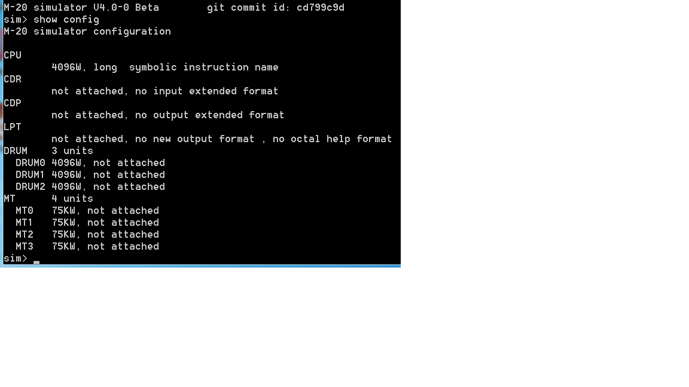
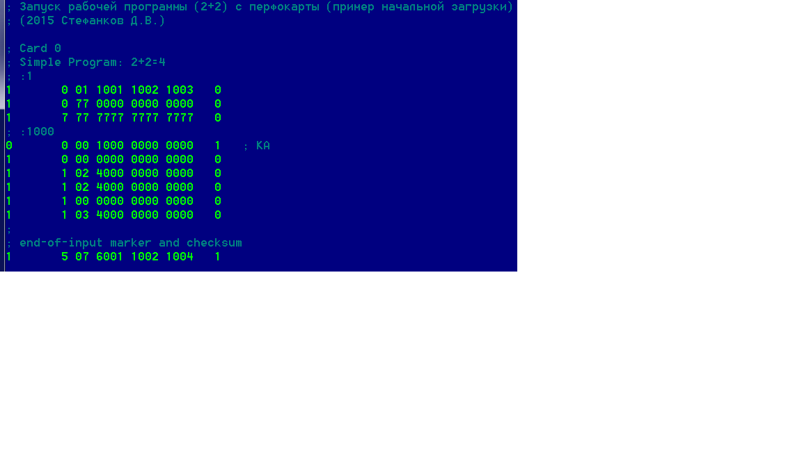
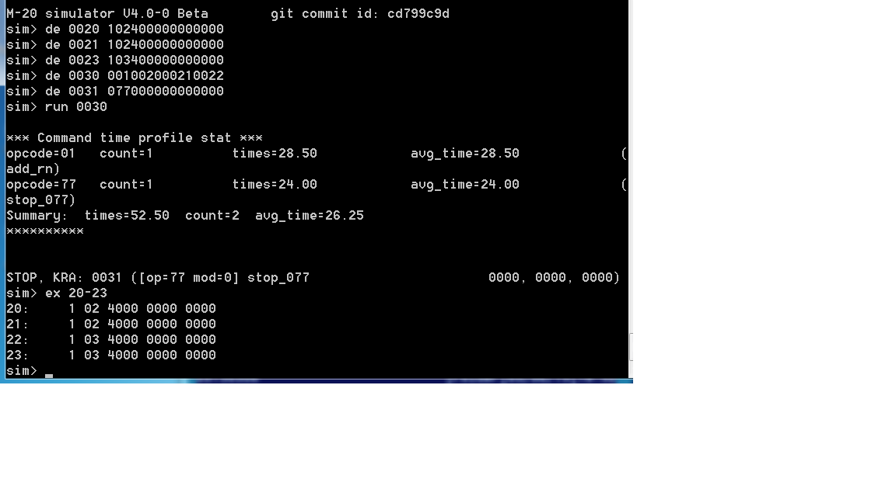
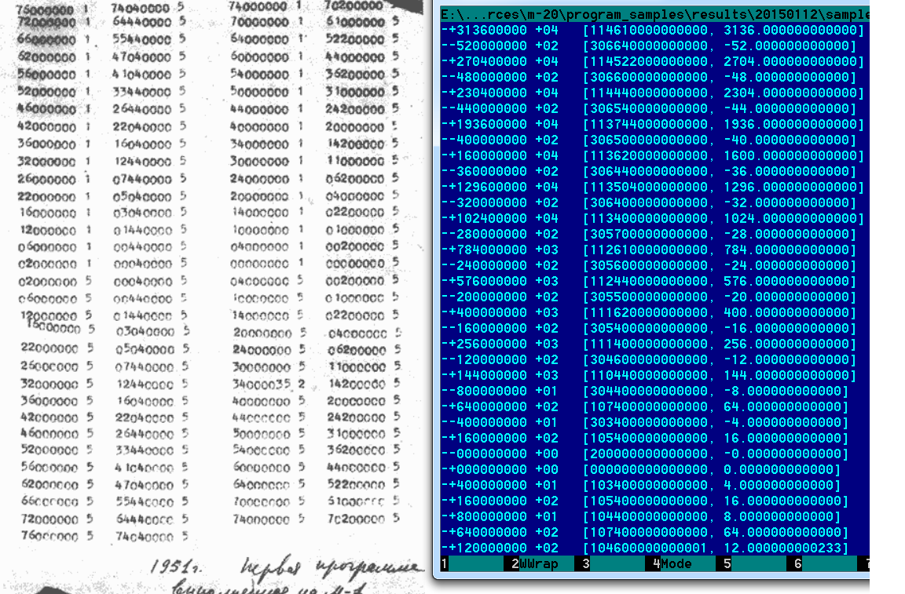
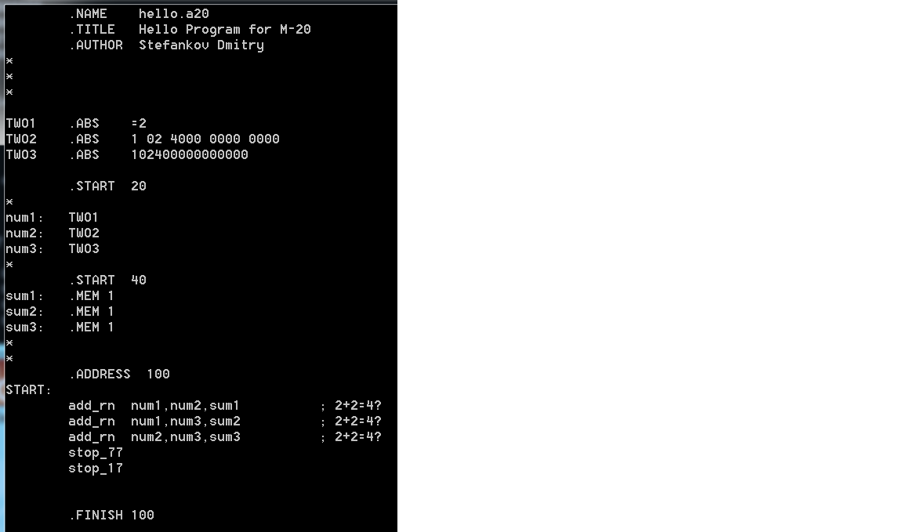

Digital computer M-20 emulator
Last modified: $Date: 2015-09-06 22:19:47+03 $
[en]
[ru]
General Introduction
Sections
M-20 digital computer emulator
M-20 basic literature list
Main technical information about digital computer M-20
Information about M-20 emulatores
Some history facts about digital computer M-20
Photos of books V.F.Ljashenko about digital computer M-20 (1963,1967,1974)
Photos and schemes of digital computer M-20 and peripheral devices
M-20 digital computer emulator (1958) [28-Feb-2015]
m20_doc.zip
1464 KB
Emulator M-20: documentation (russian only) [UPDATED: 10-Mar-2015]
m20_sources.zip
1174 KB
Emulator M-20: source codes [UPDATED: 10-Mar-2015]
m20_binaries.zip
2339 KB
Emulator M-20: binaries for Microsoft Windows [UPDATED: 10-Mar-2015]
m20_results.zip
1586 KB
Emulator M-20: results of runs and tests [UPDATED: 10-Mar-2015]
Checksums for all archives are contained in
MD5SUMS
and
SHA1SUMS
.
Screenshot 1. M-20 configuration in emulator
Screenshot 2. M-20 program loading from punch card
Screenshot 3. Interactive session in M-20 emulator
Screenshot 4. Parabola calculation for M-20 (results comparison with M-1)
Screenshot 5. M-20 autocode program (assembly language)
Screenshot 1.

Screenshot 3.

Screenshot 3.

Screenshot 4.

Screenshot 5.

M-20 basic literature list
Main technical information about digital computer M-20
Information about M-20 emulatores
Some history facts about digital computer M-20
Photos of books V.F.Ljashenko about digital computer M-20 (1963,1967,1974)
Photos and schemes of digital computer M-20 and peripheral devices
(images taken from V.F.Ljashenko books with year printing)
Copyright © 2015 Dmitry Stefankov
$Id: index.html,v 1.1 2015-09-06 22:19:47+03 dstef Exp root $